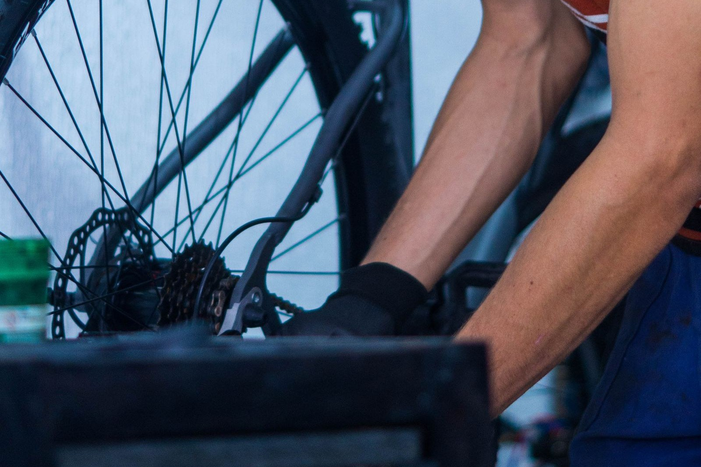

Je fiets weer
klaar voor de week.
Een lekke band, versleten remmen of tijd voor onderhoud? We kijken wat er nodig is en bespreken het met je.
Naar de werkplaats Een reparatie besprekenWat is er aan de hand?
Je hoeft niet precies te weten wat er kapot is. Vertel wat je merkt; daar kunnen we mee beginnen.
Voor de fiets
die je echt gebruikt.
Elke dag naar school of werk, boodschappen in de stad of een langere rit in het weekend. Hoe je fietst, bepaalt wat je nodig hebt.
Neem je fiets mee als je twijfelt over de afstelling, onderdelen of het onderhoud. Dan kunnen we gericht meekijken.

Goed om te weten.
Kan ik mijn fiets zomaar meenemen?
Voor een reparatie is het handig eerst te bespreken wat er speelt. Soms is een onderdeel nodig en kan de fiets niet meteen mee terug.
Ik weet niet wat er mis is.
Vertel wanneer het probleem optreedt: tijdens remmen, schakelen of juist na een tijdje fietsen. Een korte beschrijving helpt al.
Eerst weten wat er moet gebeuren?
Geef aan dat je eerst wilt overleggen. We kunnen dan bespreken welke werkzaamheden nodig zijn voordat je verdergaat.
Bespreek een reparatie.
Wat voor fiets heb je en wat merk je tijdens het rijden? Zet het erbij, dan is de vraag meteen duidelijk.